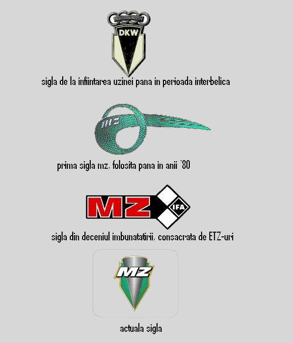

MZ-ul nu a murit niciodata, si in perioadele de tranzitie a uzinei
acesta se afla in sufletele fiecarui motociclist posesor de MZ-uri
Sigla MZ s-a schimbat pe parcursul timpului astfel:

In prezent uzina traieste, produce motociclete competitve, la actualele
standarde, cu motorizari de 125, 660, 1000, pe modele variate
MZ are reprezentante in peste 30 de tari, inclusiv in Romania, la
Bucuresti(URALMOTO.srl), punand in vanzare toate modelele, astfel:
RT 125-3.660 €
RT 125 Classic-4.014 €
125 SX-3.783 €-3.678 €
125 Fun X-4.038 €
125 SM-6.724 €
Mastiff-6.568 €
Baghira Forest-6.606 €
Baghira Black Panther-6.606 €
Baghira Black Panther HR-6.722 €
Baghira Street Moto dark silver-6.722 €
Baghira Street Moto HR dark silver-6.606 €
Baghira Street Moto-6.606 €
Baghira Street Moto HR-6.289 €
Baghira Enduro-6.289 €
Baghira Enduro HR-2.725 €
1000 S-11.990 €